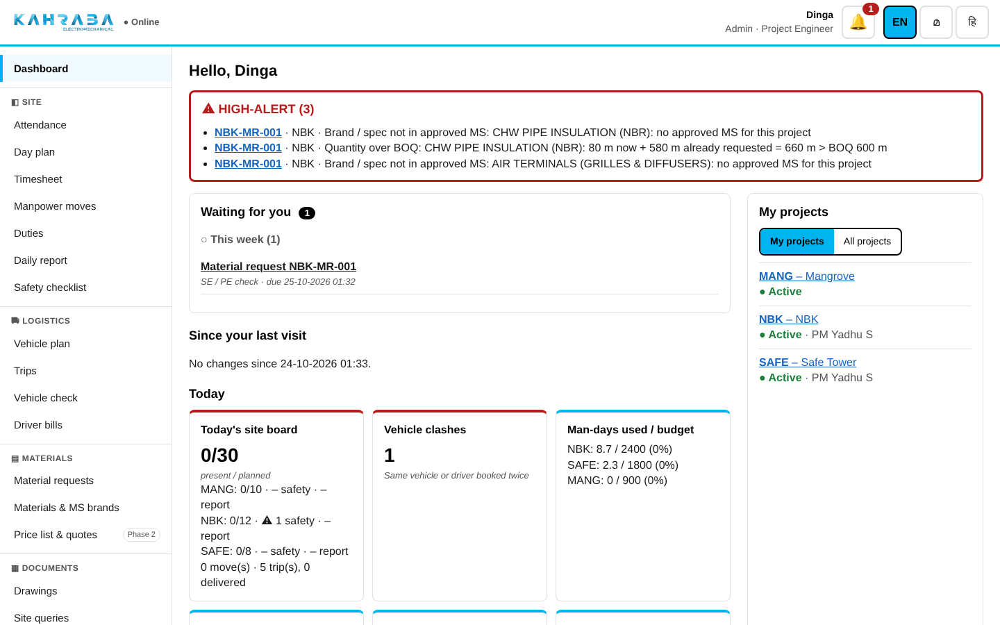
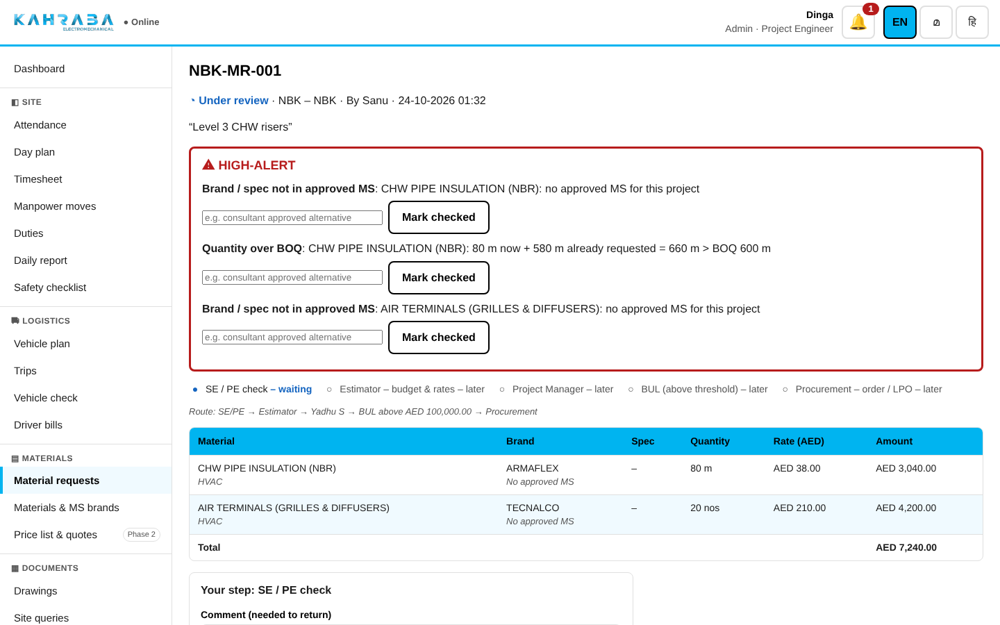
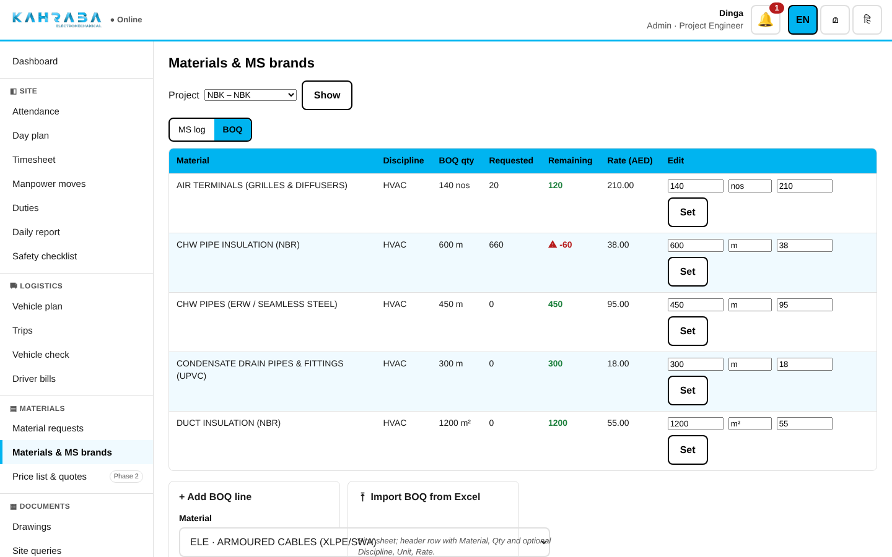
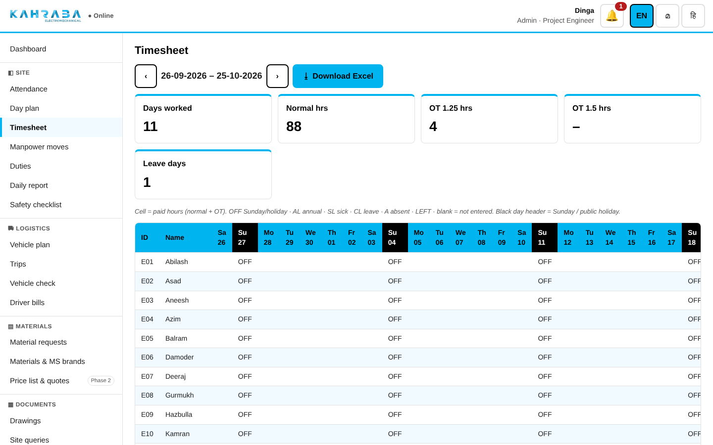
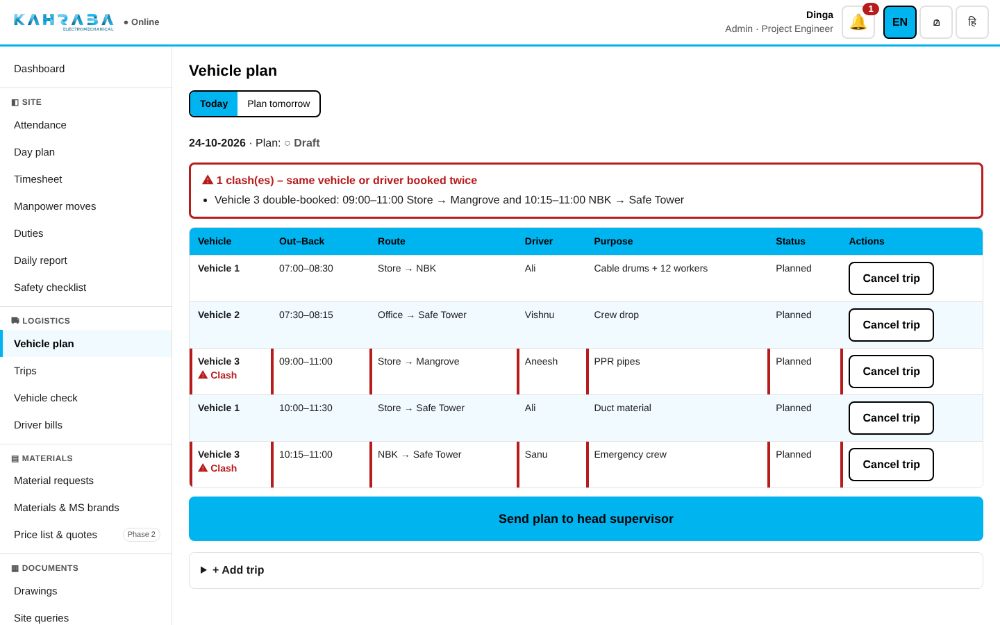
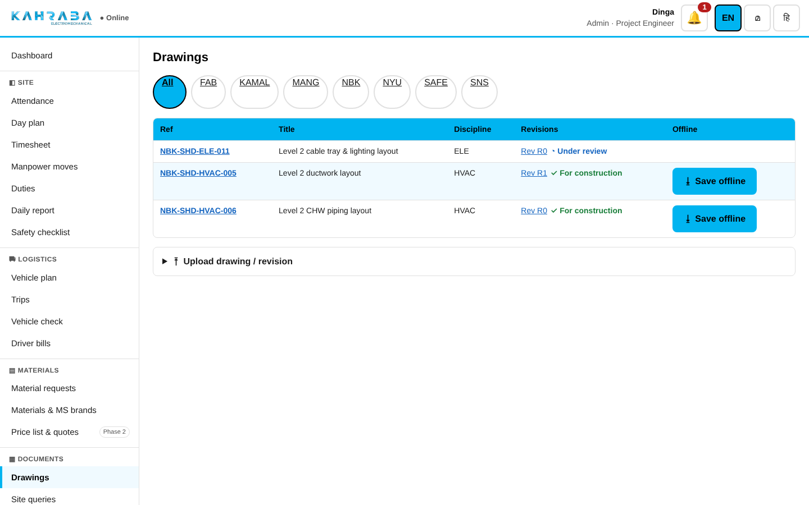
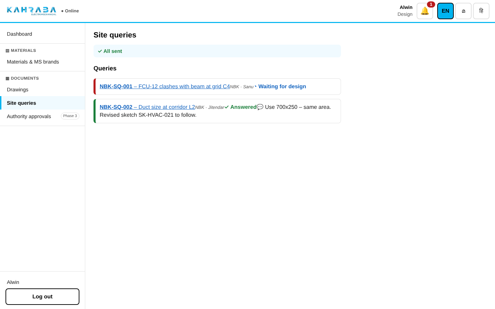
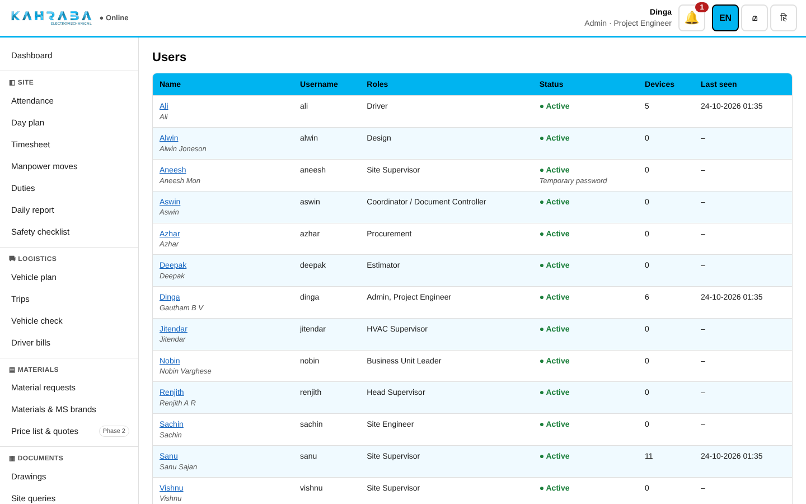

For the office team on desktop or laptop: PE, SE, PM, Operations, BUL, Estimator, Design, Coordinator, Procurement and Admin. The site team uses the phone guide.
1. Sign in and stay signed in
Open the KEM Site link (Chrome or Edge). Enter your username and password.
The first time, set your own password (at least 8 characters, letters and numbers).
You stay signed in on that computer for 90 days of use. Use Log out (bottom of the left menu) on shared computers.
Change the language at the top right: EN / മ / हि.
2. Your dashboard

Dashboard of the Project Engineer: HIGH-ALERT at the top, waiting list, today's cards, projects on the right.
Part
What it shows
HIGH-ALERT (SE and PE only)
Material requested with a brand not in an approved MS, or more than the BOQ quantity. Open the request and mark each alert checked with a note.
Waiting for you
Only the actions that are yours: Overdue (red) → Today → This week. Approvals are due within 24 hours.
Since your last visit
New notifications, requests, moves, reports, query answers and drawing releases.
Today
Cards for your role (site board, clashes, man-days vs budget, request pipeline, critical alerts…). Click a card to drill down.
Coming later
Modules planned for phase 2/3 (CCR, IPA, estimation, schedule…).
My projects / All projects
Switch at the right. Click a project for man-days, moves, reports and open requests.
🔔 bell
Notifications. Opening one marks it read.
AED values are never shown to supervisors, the head supervisor, the driver or Design – on screen or in the data the app sends to their phones.
3. Approvals – how every chain works
Each item shows its chain as a step bar: ✓ done · ● waiting · ○ later · ↩ returned · – skipped.
You only get buttons on your step. You can never approve an item you raised yourself.
Return needs a comment and sends the item one step back (from the first step, back to the person who raised it).
Item
Chain
Material request
SE or PE → Estimator (rates) → PM (Yadhu S) on his projects, otherwise Operations (Yadhu V) → BUL (Nobin) only above AED 100,000 → Procurement (LPO number = ordered)
Manpower move
Supervisor → Head supervisor. Emergency moves apply at once and are approved afterwards; a returned emergency move is undone.
Vehicle plan
Supervisors add trips → Head supervisor approves. PM sees it read-only.
Daily report
Supervisor → Head supervisor check → Site engineer check
Site query
Supervisor → Design answers → supervisor notified
Drawing
Design releases a revision "For construction" – only those reach site.
4. Material requests

A request at the SE / PE step with its HIGH-ALERTs and the full chain.
SE / PE: open the request from the dashboard, read any HIGH-ALERT, approve or return.
Estimator: enter a rate (AED per unit) for every item – pre-filled from the BOQ where set – then Approve. The total decides whether BUL is needed.
PM / Operations / BUL: check and approve. Below the threshold the BUL step shows "skipped".
Procurement: enter the LPO number and click Mark ordered.
Materials & MS brands, BOQ

BOQ per project: requested so far and remaining; edit a line or import Excel.
MS log: one line per material + brand per project. Keep the status current – only Approved / Approved with comments brands fill in automatically on site; anything else raises HIGH-ALERT.
BOQ import: Excel, first sheet, a header row with Material and Qty (optional Discipline, Unit, Rate). Unknown materials are added.
5. Manpower, attendance and timesheet
Day plan (Renjith, SE, PE, PM): which worker goes to which site, by which vehicle and shift. Supervisors' attendance lists start from it.
Attendance is marked on the phones. A worker moved during the day has his hours split by the time spent at each site.
Site start time can be changed by SUP, PM, SE and the head supervisor; every change is logged.

Timesheet for the 26th–25th cycle; Download Excel gives the KEM workbook layout.
Rule
How it is counted (same as the KEM workbook)
Mon–Sat
8 normal paid hours; lunch 1 h deducted only if the shift is longer than 5 h
Overtime ×1.25
Hours beyond a 9-hour shift on normal days
Sunday / public holiday
All worked hours ×1.5 (lunch rule applies)
Night shift 23:00–07:00
Full 8-hour day, no OT
No finish time
Standard 9-hour shift assumed, marked * – ask the supervisor to set the time
Public holidays: Admin › Public holidays. Excel sheets: Summary, Settings, Employees, Daily Log, Timesheet and Site hours.
6. Logistics

Vehicle plan with the red clash banner: the same vehicle or driver booked twice.
Today / Plan tomorrow tabs. Add trips (vehicle, driver, from → to, times, purpose, passengers, materials).
Supervisors send the plan to Renjith; any later change by them sends it back to draft.
Driver bills: Ali enters the amount; supervisors' bills have no amount – the office enters it from the photo and clicks Check.
7. Drawings and site queries

Drawing register: revisions, status and "For construction".
Upload (Design, Coordinator, PE, Admin): new drawing (ref is created, e.g. NBK-SHD-HVAC-005) or new revision; PDF up to 60 MB.
Release for construction (Design only): the previous FC revision is superseded; site is notified.
Viewer: + / − / Fit, Calibrate on a known dimension, then Measure or Chain; measurements are saved with the drawing.

Design answers a site query; the supervisor gets a notification.
8. Admin (Dinga) and PM

User page: signed-in devices, sign out all devices, roles, reset password, deactivate.
Task
Where
New user (temporary password shown once)
Admin › Users › New user
Lost phone – sign out all devices
Admin › Users › name › Sign out all devices (Admin and PM)
Someone leaves
Admin › Users › name › Deactivate (signs out everywhere)
Sites (start time, map link), workers, vehicles, holidays
Admin › Sites / Workers / Vehicles / Public holidays
Who changed what
Admin › Audit log
Backup, restore, service, remote access
docs/DEPLOY_WINDOWS.md and docs/TAILSCALE_FUNNEL.md
Pilot scope: NBK. Estimation, CCR, IPA, subcontractor bills, accounts, SABR packs, price lists, DWG, take-off, schedule, HVAC T&C, authority approvals and the weekly PDF report are planned for phase 2/3.